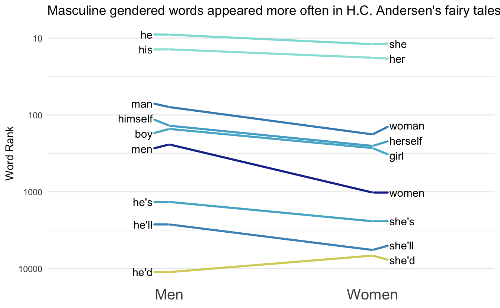
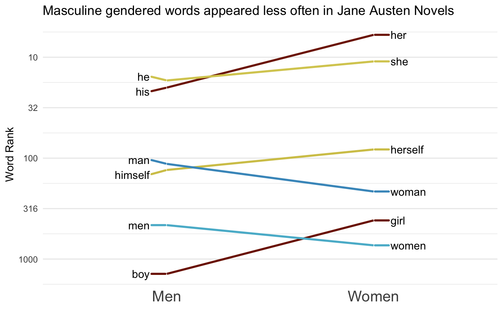
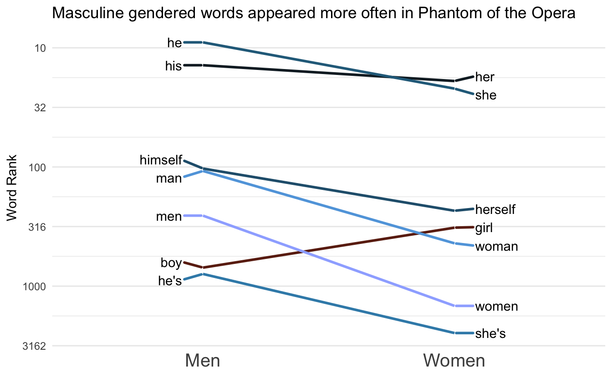
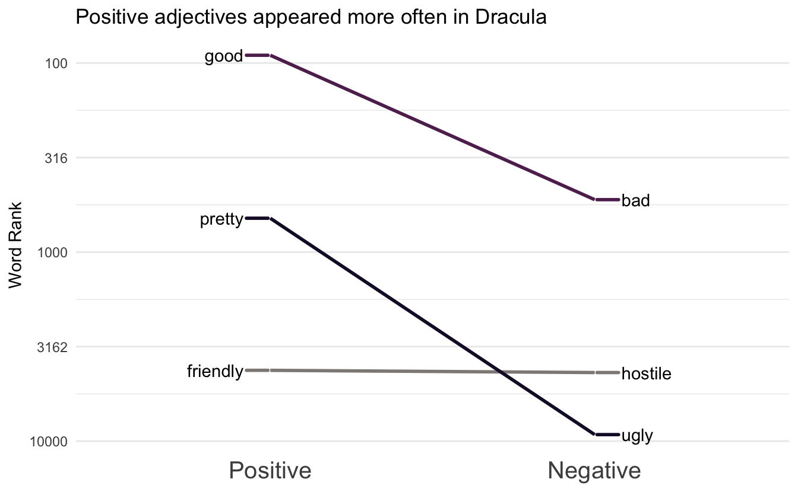

I have been working on visualizing how different kinds of words are used in texts and I finally found a good visualization style with the slope chart. More specifically I’m thinking of two groups of paired words.
Packages 📦
library(tidyverse)
library(hcandersenr)
library(tidytext)
library(paletteer)
library(ggrepel)Minimal Example 1️⃣
First I’ll walk you through a minimal example of how the chart is created. Afterward, I have created a function to automate the whole procedure so we can quickly iterate. We start with an example of gendered words in fairy tales by H.C. Andersen using the hcandersenr package. We start by generating a data.frame of paired words. This is easily done using the tribble() function.
gender_words <- tribble(
~men, ~women,
"he", "she",
"his", "her",
"man", "woman",
"men", "women",
"boy", "girl",
"he's", "she's",
"he'd", "she'd",
"he'll", "she'll",
"himself", "herself"
)Next, we are going to tokenize and count the tokens in the corpus,
ordered_words <- hcandersen_en %>%
unnest_tokens(word, text) %>%
count(word, sort = TRUE) %>%
pull(word)Next, we are going to get the index for each word, which we will put on a log scale since it will be easier to visualize. Next, we will calculate a slope between the points and add the correct labels.
gender_words_plot <- gender_words %>%
mutate(male_index = match(men, ordered_words),
female_index = match(women, ordered_words)) %>%
mutate(slope = log10(male_index) - log10(female_index)) %>%
pivot_longer(male_index:female_index) %>%
mutate(value = log10(value),
label = ifelse(name == "male_index", men, women)) %>%
mutate(name = factor(name, c("male_index", "female_index"), c("men", "women")))Next, we are going to manually calculate the limits to make sure a diverging color scale will have the colors done directly.
limit <- max(abs(gender_words_plot$slope)) * c(-1, 1)Lastly, we just put everything into ggplot2, and voila!!
gender_words_plot %>%
ggplot(aes(name, value, group = women, label = label)) +
geom_line(aes(color = slope)) +
scale_y_reverse(labels = function(x) 10 ^ x) +
geom_text() +
guides(color = "none") +
scale_color_distiller(type = "div", limit = limit) +
theme_minimal() +
theme(panel.border = element_blank(), panel.grid.major.x = element_blank()) +
labs(x = NULL, y = "Word Rank") +
labs(title = "Masculine gendered words appeared more often in H.C. Andersen's fairy tales")
Make it into a function ✨
This function is mostly the same as the code you saw earlier. Main difference is using .data from rlang to generalize. The function also includes other beautifications such as improved themes and theme support with paletteer.
plot_fun <- function(words, ref, palette = "scico::roma", ...) {
names <- colnames(ref)
ordered_words <- names(sort(table(words), decreasing = TRUE))
plot_data <- ref %>%
mutate(index1 = match(.data[[names[1]]], ordered_words),
index2 = match(.data[[names[2]]], ordered_words)) %>%
mutate(slope = log10(index1) - log10(index2)) %>%
pivot_longer(index1:index2) %>%
mutate(value = log10(value),
label = ifelse(name == "index1",
.data[[names[1]]],
.data[[names[2]]]),
name = factor(name, c("index1", "index2"), names))
limit <- max(abs(plot_data$slope)) * c(-1, 1)
plot_data %>%
ggplot(aes(name, value, group = .data[[names[2]]], label = label)) +
geom_line(aes(color = slope), size = 1) +
scale_y_reverse(labels = function(x) round(10 ^ x)) +
geom_text_repel(data = subset(plot_data, name == names[1]),
aes(segment.color = slope),
nudge_x = -0.1,
segment.size = 1,
direction = "y",
hjust = 1) +
geom_text_repel(data = subset(plot_data, name == names[2]),
aes(segment.color = slope),
nudge_x = 0.1,
segment.size = 1,
direction = "y",
hjust = 0) +
scale_color_paletteer_c(palette,
limit = limit,
aesthetics = c("color", "segment.color"),
...) +
guides(color = "none", segment.color = "none") +
theme_minimal() +
theme(panel.border = element_blank(),
panel.grid.major.x = element_blank(), axis.text.x = element_text(size = 15)) +
labs(x = NULL, y = "Word Rank")
}Now we can recreate the previous chart with ease
ref <- tribble(
~Men, ~Women,
"he", "she",
"his", "her",
"man", "woman",
"men", "women",
"boy", "girl",
"he's", "she's",
"he'd", "she'd",
"he'll", "she'll",
"himself", "herself"
)
words <- hcandersen_en %>%
unnest_tokens(word, text) %>%
pull(word)
plot_fun(words, ref, direction = -1) +
labs(title = "Masculine gendered words appeared more often in H.C. Andersen's fairy tales")
Gallery 🖼
ref <- tribble(
~Men, ~Women,
"he", "she",
"his", "her",
"man", "woman",
"men", "women",
"boy", "girl",
"himself", "herself"
)
words <- janeaustenr::austen_books() %>%
unnest_tokens(word, text) %>%
pull(word)
plot_fun(words, ref, direction = -1) +
labs(title = "Masculine gendered words appeared less often in Jane Austen Novels")
More examples using the tidygutenbergr package.
ref <- tribble(
~Men, ~Women,
"he", "she",
"his", "her",
"man", "woman",
"men", "women",
"boy", "girl",
"he's", "she's",
"himself", "herself"
)
words <- tidygutenbergr::phantom_of_the_opera() %>%
unnest_tokens(word, text) %>%
pull(word)
plot_fun(words, ref, "scico::berlin") +
labs(title = "Masculine gendered words appeared more often in Phantom of the Opera")
ref <- tribble(
~Positive, ~Negative,
"good", "bad",
"pretty", "ugly",
"friendly", "hostile"
)
words <- tidygutenbergr::dracula() %>%
unnest_tokens(word, text) %>%
pull(word)
plot_fun(words, ref, palette = "scico::tokyo") +
labs(title = "Positive adjectives appeared more often in Dracula")
session information
─ Session info ───────────────────────────────────────────────────────────────
setting value
version R version 4.1.0 (2021-05-18)
os macOS Big Sur 10.16
system x86_64, darwin17.0
ui X11
language (EN)
collate en_US.UTF-8
ctype en_US.UTF-8
tz America/Los_Angeles
date 2021-07-16
─ Packages ───────────────────────────────────────────────────────────────────
package * version date lib
assertthat 0.2.1 2019-03-21 [1]
backports 1.2.1 2020-12-09 [1]
blogdown 1.3.2 2021-06-09 [1]
bookdown 0.22 2021-04-22 [1]
broom 0.7.8 2021-06-24 [1]
bslib 0.2.5.1 2021-05-18 [1]
cellranger 1.1.0 2016-07-27 [1]
cli 3.0.0 2021-06-30 [1]
clipr 0.7.1 2020-10-08 [1]
codetools 0.2-18 2020-11-04 [1]
colorspace 2.0-2 2021-06-24 [1]
crayon 1.4.1 2021-02-08 [1]
curl 4.3.2 2021-06-23 [1]
DBI 1.1.1 2021-01-15 [1]
dbplyr 2.1.1 2021-04-06 [1]
desc 1.3.0 2021-03-05 [1]
details * 0.2.1 2020-01-12 [1]
digest 0.6.27 2020-10-24 [1]
dplyr * 1.0.7 2021-06-18 [1]
ellipsis 0.3.2 2021-04-29 [1]
emo 0.0.0.9000 2021-07-17 [1]
evaluate 0.14 2019-05-28 [1]
fansi 0.5.0 2021-05-25 [1]
farver 2.1.0 2021-02-28 [1]
forcats * 0.5.1 2021-01-27 [1]
fs 1.5.0 2020-07-31 [1]
generics 0.1.0 2020-10-31 [1]
ggplot2 * 3.3.5 2021-06-25 [1]
ggrepel * 0.9.1 2021-01-15 [1]
glue 1.4.2 2020-08-27 [1]
gtable 0.3.0 2019-03-25 [1]
gutenbergr 0.2.1 2021-06-01 [1]
haven 2.4.1 2021-04-23 [1]
hcandersenr * 0.2.0 2019-01-19 [1]
highr 0.9 2021-04-16 [1]
hms 1.1.0 2021-05-17 [1]
htmltools 0.5.1.1 2021-01-22 [1]
httr 1.4.2 2020-07-20 [1]
janeaustenr 0.1.5 2017-06-10 [1]
jquerylib 0.1.4 2021-04-26 [1]
jsonlite 1.7.2 2020-12-09 [1]
knitr * 1.33 2021-04-24 [1]
labeling 0.4.2 2020-10-20 [1]
lattice 0.20-44 2021-05-02 [1]
lifecycle 1.0.0 2021-02-15 [1]
lubridate 1.7.10 2021-02-26 [1]
magrittr 2.0.1 2020-11-17 [1]
Matrix 1.3-3 2021-05-04 [1]
modelr 0.1.8 2020-05-19 [1]
munsell 0.5.0 2018-06-12 [1]
paletteer * 1.3.0 2021-01-06 [1]
pillar 1.6.1 2021-05-16 [1]
pkgconfig 2.0.3 2019-09-22 [1]
png 0.1-7 2013-12-03 [1]
prismatic 1.0.0 2021-01-05 [1]
purrr * 0.3.4 2020-04-17 [1]
R6 2.5.0 2020-10-28 [1]
Rcpp 1.0.7 2021-07-07 [1]
readr * 1.4.0 2020-10-05 [1]
readxl 1.3.1 2019-03-13 [1]
rematch2 2.1.2 2020-05-01 [1]
reprex 2.0.0 2021-04-02 [1]
rlang 0.4.11 2021-04-30 [1]
rmarkdown 2.9 2021-06-15 [1]
rprojroot 2.0.2 2020-11-15 [1]
rstudioapi 0.13 2020-11-12 [1]
rvest 1.0.0 2021-03-09 [1]
sass 0.4.0 2021-05-12 [1]
scales 1.1.1 2020-05-11 [1]
scico 1.2.0 2020-06-08 [1]
sessioninfo 1.1.1 2018-11-05 [1]
SnowballC 0.7.0 2020-04-01 [1]
stringi 1.6.2 2021-05-17 [1]
stringr * 1.4.0 2019-02-10 [1]
tibble * 3.1.2 2021-05-16 [1]
tidygutenbergr 0.0.0.9000 2021-07-17 [1]
tidyr * 1.1.3 2021-03-03 [1]
tidyselect 1.1.1 2021-04-30 [1]
tidytext * 0.3.1 2021-04-10 [1]
tidyverse * 1.3.1 2021-04-15 [1]
tokenizers 0.2.1 2018-03-29 [1]
triebeard 0.3.0 2016-08-04 [1]
urltools 1.7.3 2019-04-14 [1]
utf8 1.2.1 2021-03-12 [1]
vctrs 0.3.8 2021-04-29 [1]
withr 2.4.2 2021-04-18 [1]
xfun 0.24 2021-06-15 [1]
xml2 1.3.2 2020-04-23 [1]
yaml 2.2.1 2020-02-01 [1]
source
CRAN (R 4.1.0)
CRAN (R 4.1.0)
Github (rstudio/blogdown@00a2090)
CRAN (R 4.1.0)
CRAN (R 4.1.0)
CRAN (R 4.1.0)
CRAN (R 4.1.0)
CRAN (R 4.1.0)
CRAN (R 4.1.0)
CRAN (R 4.1.0)
CRAN (R 4.1.0)
CRAN (R 4.1.0)
CRAN (R 4.1.0)
CRAN (R 4.1.0)
CRAN (R 4.1.0)
CRAN (R 4.1.0)
CRAN (R 4.1.0)
CRAN (R 4.1.0)
CRAN (R 4.1.0)
CRAN (R 4.1.0)
Github (hadley/emo@3f03b11)
CRAN (R 4.1.0)
CRAN (R 4.1.0)
CRAN (R 4.1.0)
CRAN (R 4.1.0)
CRAN (R 4.1.0)
CRAN (R 4.1.0)
CRAN (R 4.1.0)
CRAN (R 4.1.0)
CRAN (R 4.1.0)
CRAN (R 4.1.0)
CRAN (R 4.1.0)
CRAN (R 4.1.0)
CRAN (R 4.1.0)
CRAN (R 4.1.0)
CRAN (R 4.1.0)
CRAN (R 4.1.0)
CRAN (R 4.1.0)
CRAN (R 4.1.0)
CRAN (R 4.1.0)
CRAN (R 4.1.0)
CRAN (R 4.1.0)
CRAN (R 4.1.0)
CRAN (R 4.1.0)
CRAN (R 4.1.0)
CRAN (R 4.1.0)
CRAN (R 4.1.0)
CRAN (R 4.1.0)
CRAN (R 4.1.0)
CRAN (R 4.1.0)
CRAN (R 4.1.0)
CRAN (R 4.1.0)
CRAN (R 4.1.0)
CRAN (R 4.1.0)
CRAN (R 4.1.0)
CRAN (R 4.1.0)
CRAN (R 4.1.0)
CRAN (R 4.1.0)
CRAN (R 4.1.0)
CRAN (R 4.1.0)
CRAN (R 4.1.0)
CRAN (R 4.1.0)
CRAN (R 4.1.0)
CRAN (R 4.1.0)
CRAN (R 4.1.0)
CRAN (R 4.1.0)
CRAN (R 4.1.0)
CRAN (R 4.1.0)
CRAN (R 4.1.0)
CRAN (R 4.1.0)
CRAN (R 4.1.0)
CRAN (R 4.1.0)
CRAN (R 4.1.0)
CRAN (R 4.1.0)
CRAN (R 4.1.0)
Github (emilhvitfeldt/tidygutenbergr@89e4049)
CRAN (R 4.1.0)
CRAN (R 4.1.0)
CRAN (R 4.1.0)
CRAN (R 4.1.0)
CRAN (R 4.1.0)
CRAN (R 4.1.0)
CRAN (R 4.1.0)
CRAN (R 4.1.0)
CRAN (R 4.1.0)
CRAN (R 4.1.0)
CRAN (R 4.1.0)
CRAN (R 4.1.0)
CRAN (R 4.1.0)
[1] /Library/Frameworks/R.framework/Versions/4.1/Resources/library